Script & storyboard
A single JSON document — twelve shots, a shared character description, a style guide, music direction — validated against a schema and treated as the one source of truth every later stage reads from.
An AI-generated heritage short · narrated in Amharic
A boy wants the ground to swallow him when his mother haggles a shop owner down from 2000 birr to 500, right in front of him. Years later, he understands exactly why she was right to.
As a boy, he goes with his mother to a street of small boutiques to buy a pair of jeans. He points at the ones he wants. The owner names his price — two thousand birr. His mother, without missing a beat, offers three hundred.
The boy is mortified. The owner refuses. She starts to walk. The owner calls her back at a thousand; she still shakes her head. Only once she's outside does she turn back herself with a real final offer — five hundred, because her son liked them. The owner laughs, agrees, and tells her she's a customer now.
They walk home with the jeans. The boy, grown now, narrates what he actually learned that day: being too embarrassed to ask for what something is really worth isn't good manners. It isn't even kindness. It's just a loss.
Made for the IoAcademy "AI-Content Generation: Heritage Short" challenge — for young Ethiopians and diaspora friends watching on their phones.
Every scene started as a single painterly still — a keyframe, generated and regenerated until the characters, the street, and the light all matched a shared description. These are the twelve that became the film.
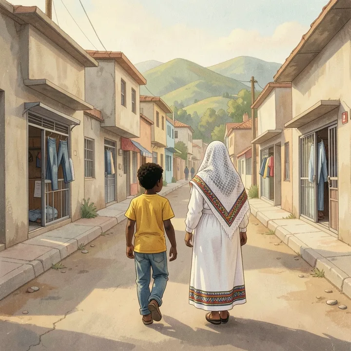
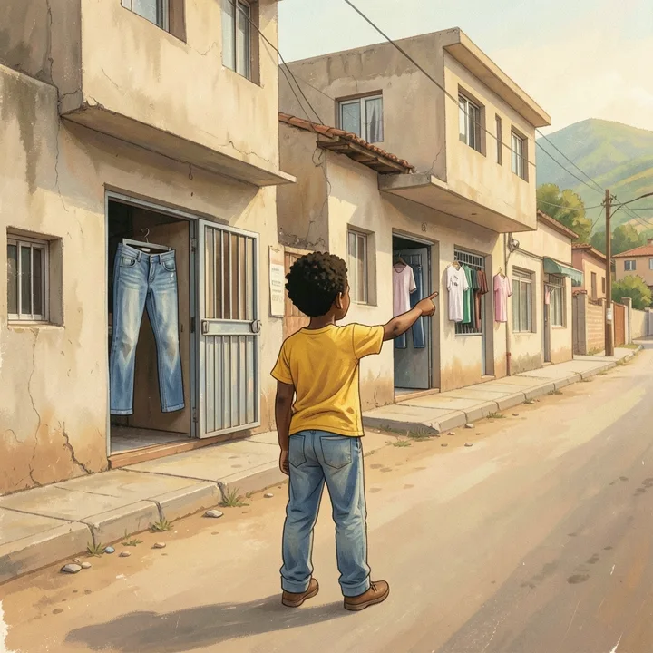
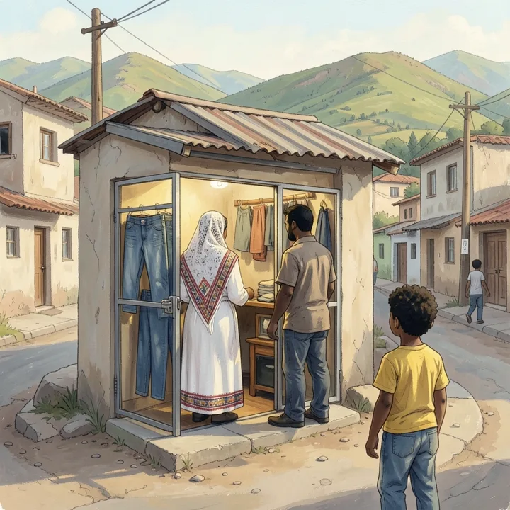
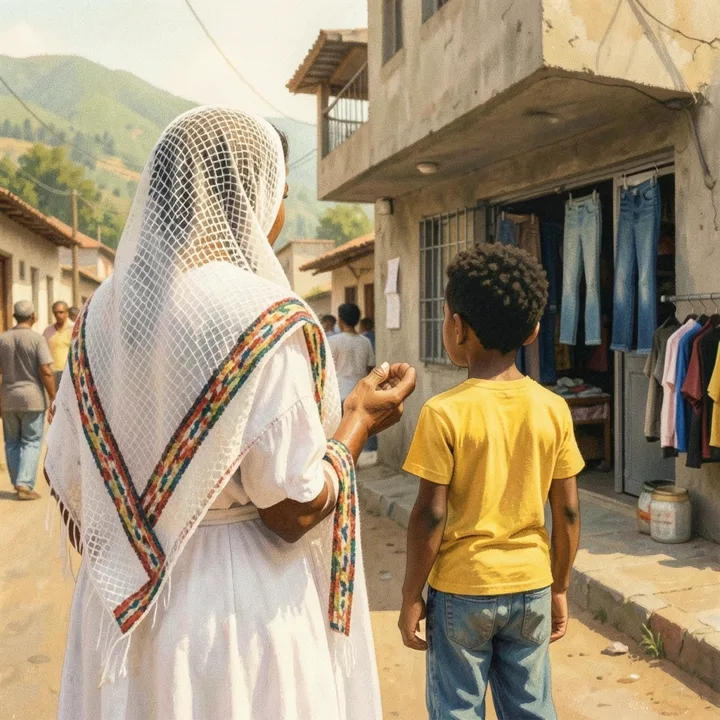
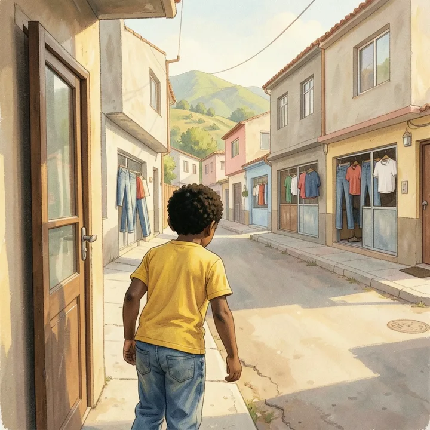
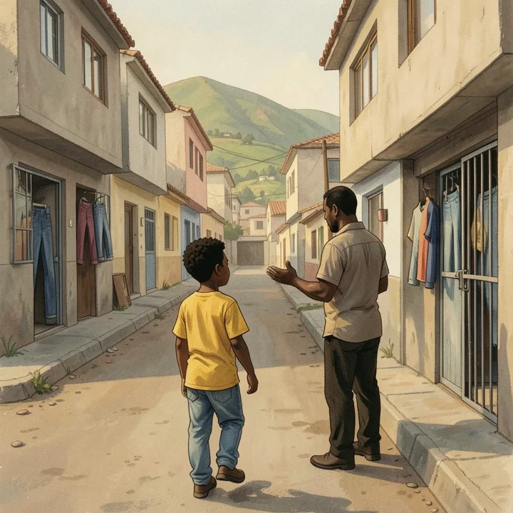
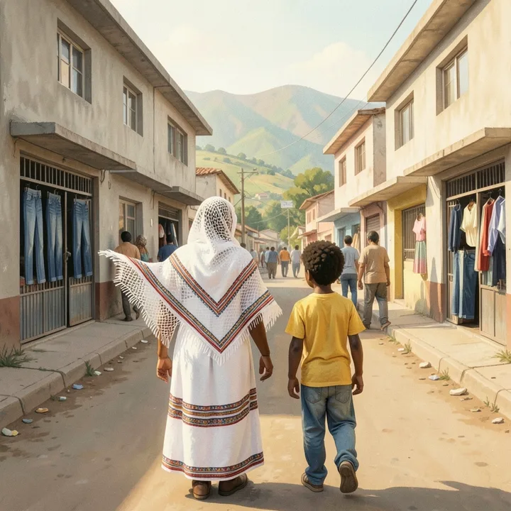
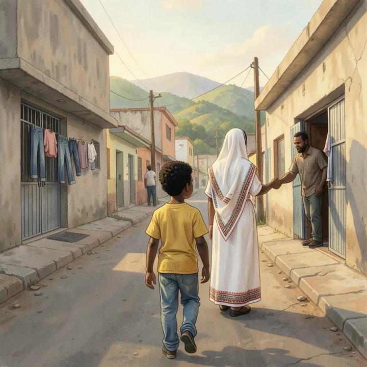
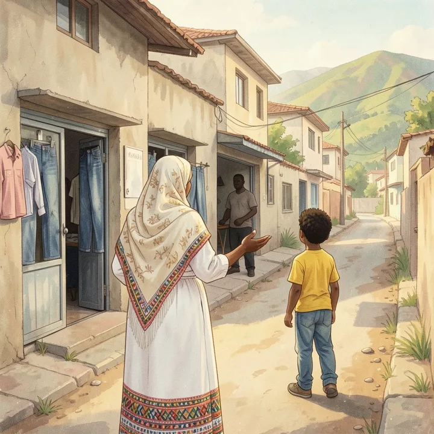
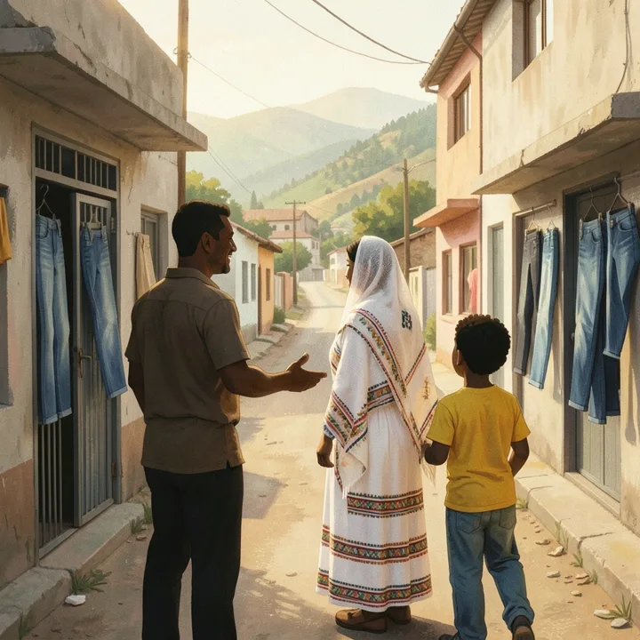
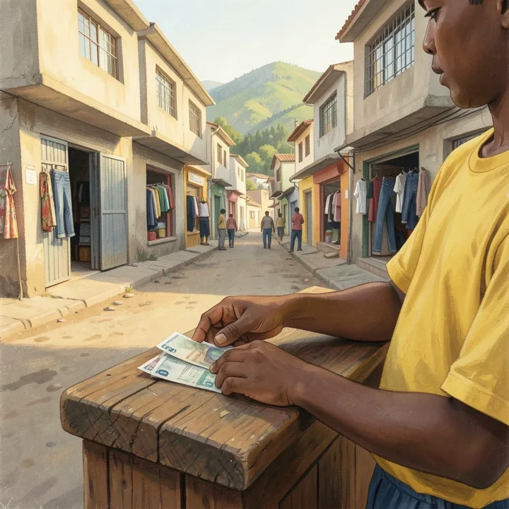
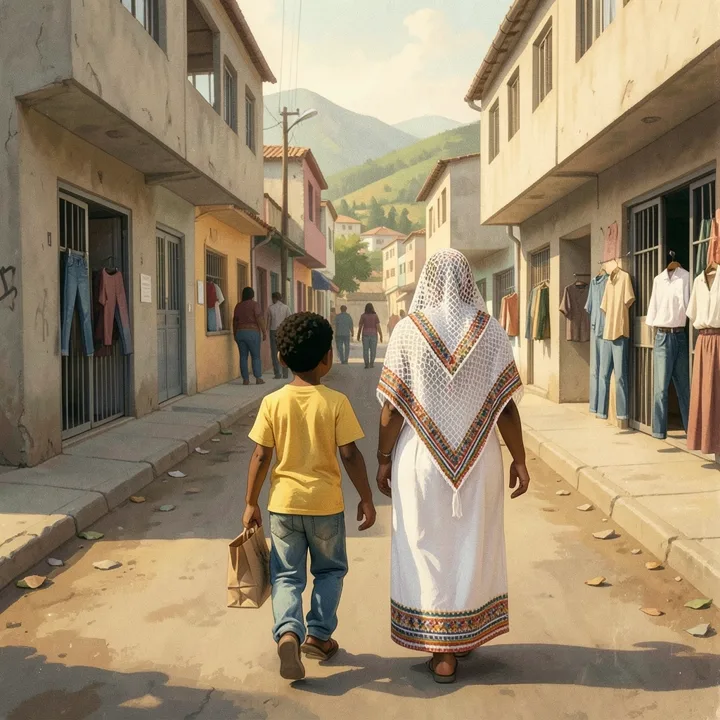
Not one model, one prompt — a small pipeline, six stages, each one a real piece of software with its own caching, retries, and a written record of every call it made.
A single JSON document — twelve shots, a shared character description, a style guide, music direction — validated against a schema and treated as the one source of truth every later stage reads from.
Amharic narration from Google's Gemini text-to-speech, one line per shot, a male voice throughout. English subtitles are a separate, hand-written track — not a translation of the audio, a parallel one.
Twelve keyframes from Cloudflare's hosted FLUX image models, every prompt repeating the same character and style description so the boy, his mother, and the shop owner stay recognisable scene to scene.
Each still becomes a few seconds of real motion through Wan 2.2, an image-to-video model. Confirmed the hard way that this model needs more VRAM than a free-tier GPU has to give — so it ran on a hosted API instead.
A gentle, warm instrumental score, composed for this film's exact mood, bpm, and runtime — mixed to duck quietly under the narration rather than compete with it.
Every clip, voice line, and music bed meets in ffmpeg: sidechain compression ducks the score under the voice, loudness is normalised for phones, subtitles and price captions are burned in, and the whole thing is cropped from one shared master into both a vertical and a widescreen cut.
Nothing here was assumed to work on the first guess. Model names, API shapes, and hard limits (a frame-count cap here, a VRAM ceiling there) were confirmed against the real, live services before being relied on — and logged, including the dead ends, as part of the project itself.
This film is drawn from a real memory, but every character on screen is a fictionalised, stylised illustration — never a generated likeness of a real person's face. Everyone whose story this touches knew about the project and consented to it before a single frame was made.